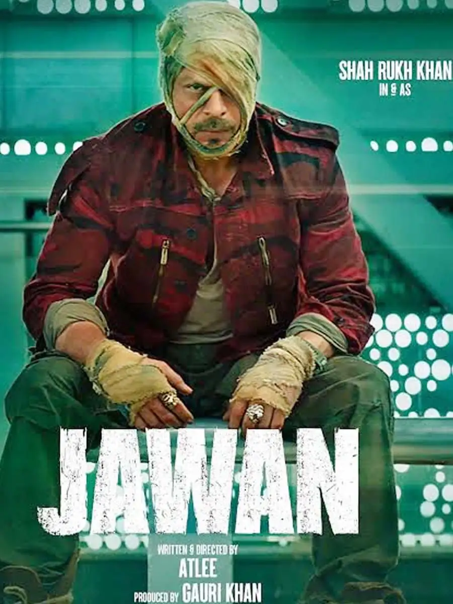
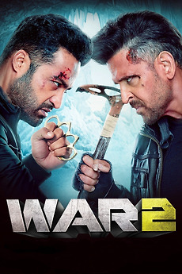
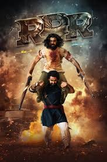

Jawan (transl. Soldier) is an Indian Hindi , Tamil, Telugu language action thriller movie. Atlee Kumar made his Hindi movie debut by writing and directing this movie.[1] It is produced by Gauri Khan and Gaurav Verma under Red Chillies Entertainment. It stars Shah Rukh Khan in a multiple roles, along with Vijay Sethupathi, Nayanthara and Sanya Malhotra in lead roles.[2] The music of the movie is composed by Anirudh Ravichander.

War 2 is a 2025 Indian Hindi-language action-thriller film directed by Ayan Mukerji and produced by Aditya Chopra under Yash Raj Films. Based on a script written by Shridhar Raghavan and Abbas Tyrewala, from an original story by Chopra, it is the sixth instalment in the YRF Spy Universe and sequel to the 2019 film War. The film stars Hrithik Roshan, N. T. Rama Rao Jr. (in his Hindi film debut) and Kiara Advani in the lead roles, alongside Ashutosh Rana and Anil Kapoor in pivotal roles. It follows Kabir Dhaliwal, a former RAW agent, who, after going rogue, becomes a major threat to national security, and a special units officer, Vikram Chelapathi, is assigned to neutralize him.

RRR[b] is a 2022 Indian Telugu-language epic period action drama film directed by S. S. Rajamouli, who co-wrote the screenplay with V. Vijayendra Prasad.[5] Produced by D. V. V. Danayya under DVV Entertainment, the film stars N. T. Rama Rao Jr. and Ram Charan as fictionalised versions of Indian revolutionaries Komaram Bheem and Alluri Sitarama Raju, respectively. It also features Ajay Devgn, Alia Bhatt, Shriya Saran, Samuthirakani, Ray Stevenson, Alison Doody and Olivia Morris in supporting roles. It marks the Telugu film debuts of Devgn, Bhatt, Stevenson, Doody and Morris. The film is a fictionalised tale of two historical freedom fighters, set in the Indian pre-independence era.